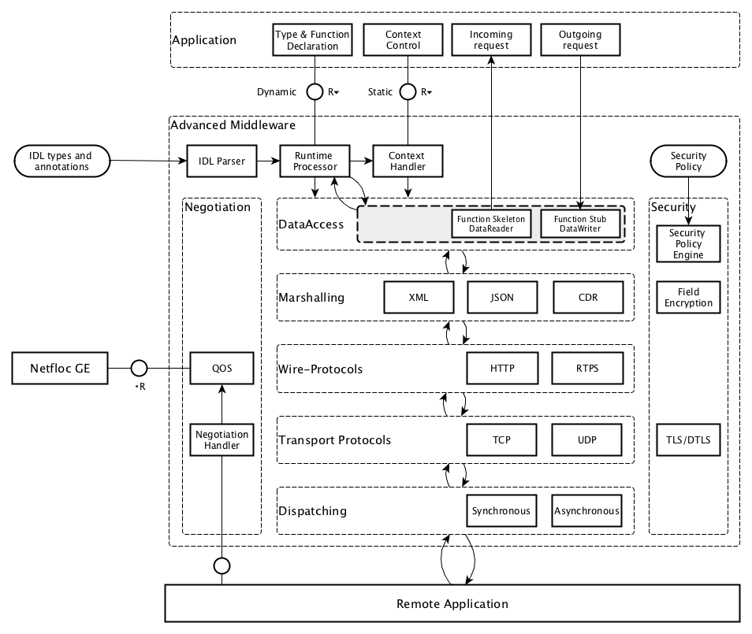
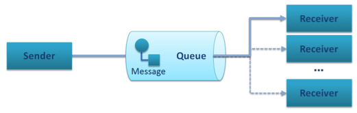

Advanced Middleware Architecture¶
Legal Notice¶
Please check the following Legal Notice to understand the rights to use these specifications.
Overview¶
This specification describes the Advanced Middleware GE, which enables flexible, efficient, scalable, and secure communication between distributed applications and to/between FIWARE GEs.
Middleware in general provides a software layer between the application and the communication network and allows application to abstract from the intricacies of how to send a piece of data to a service offered by a another application and possibly return results. The middleware offers functionality to find and establish a connection to a service, negotiate the best wire and transport protocols, access the applications data structures and encode the necessary data in a format suitable for the chosen protocol, and finally send that data and possibly receive results in return. In a similar way an application can use the middleware also to offer services to other applications by registering suitable service functionality and interfaces, which can then be used as targets of communication.
General Note¶
In contrast to other GEs, the Advanced Middleware GE is not a standalone service running in the network, but a set of compile-/runtime tools and a communication library to be integrated with the application.
The Advanced Middleware (AMi) architecture presented here offers a number of key advantages over other available middleware implementations:
- High-Level Service Architecture: AMi offers applications a high-level architecture that can shield them from the complexities and dangers of network programming. When applications declare services and data structures they can annotate them with the QoS, security, and other requirements while AMi automatically implement them. Thus application developers can exclusively focus on the application functionality.
- Security: The network is the main security threat to most applications today but existing middleware has offered only limited security functionality that has often been added as an afterthought and requires the application developer (who are often not security experts) to configure the security functionality. Instead, AMi offers Security by Design where security has been designed into the architecture from the start. Applications can simply declare their security needs in the form of security policies (security rules) and apply them to data structures and service at development time or even later during deployment definitions. AMi then makes sure that these requirements are met before any communication takes place and applies any suitable security measures (e.g. encryption, signatures, etc.) during the communication.
- Dynamic Multi-Protocol support: The AMi architecture can select at run-time the best way to communicate with a remote service. Thus, an AMi application can simultaneously talk with legacy services via their predefined protocols (e.g. DDS). It also supports various communication patterns, like Publish-/Subscribe (PubSub), Point-To-Point, or Request-/Reply (RPC).
- QoS and Software Defined networking: Where possible the QoS annotations are also used to configure the network using modern Software Defined networking functionality, e.g. to reserve bandwidth.
The Advanced Middleware GE components¶
The following layer diagram shows the main components of the Advanced Communication Middleware GE.

Advanced Middleware Architecture Overview
In the diagram the main communication flow goes from top to bottom for sending data, respectively and from bottom to top for receiving data. As in a typical layer diagram each layer is responsible for specific features and builds on top of the layers below. Some modules are cross cutting and go therefore over several layers (e.g. Security).
Here are some of the highlights of the AMi architecture shown in above diagram:
- AMi clearly separates the definition of WHAT data must be communicated (the communication contract via one of many interface definition languages (IDLs)) from WHERE that data comes from in the application and from HOW that data is transmitted. This separation of concerns is critical to support some advanced functionality and be portable to a wide range of services and their communication mechanisms.
- AMi supports multiple IDLs to define what data needs to be communicated. On establishing the connection the interface definition of a service are obtained (explicitly or implicitly).
- AMi offers annotations for QoS, security, or other features that can be added to the data declared by the application, to the IDL, as well as later during deployment. They are used by the middleware to automatically implement its functionality by requesting QoS functionality from the network layer or automatically enforcing security measures.
- As the connection to a service is established, both sides choose a common mechanism and protocol (negotiation) to best communicate with each other.
The most efficient transport and protocol method supported by both sides will be selected. AMi has been designed to also support Software Defined Networking in order to configure QOS parameters in the network.
- AMi offers an efficient dispatching mechanism for scheduling incoming request to the correct service implementation.
Below we give a short description of the different layers and components.
API & Data Access¶
The application accesses the communication middleware using a set of defined function calls provided by the API-layer. They may vary depending on the communication pattern (see below).
The main functionality of the Data Access Layer is to provide the mapping of data types and Function Stubs/Skeletons (request/response pattern) or DataReaders/-Writers (publish/subscribe or point-to-point pattern).
The Advanced Middleware GE provides two variants of this functionality:
- A basic static compile-time Data-Mapping and generation of Function Stubs/Skeletons or DataReaders/-Writers, created by a compile time IDL-Parser/Generator from the remote service description, which is provided in an Interface Definition Language (IDL) syntax based on the Object Management Group (OMG) IDL (see below), which is submitted as a W3C draft.
- A dynamic runtime Data-Mapping and invocation of Function or DataReader/-Writer proxies, by parsing the IDL description of the remote service at runtime and map it to the function/data definition provided by the developer when setting up the connection.
Quality of Service (QoS) parameters and Security Policies may be provided through the API and/or IDL-Annotations. This information will be used by the QoS and Security modules to ensure the requested guarantees.
Depending on the communication pattern, different communication mechanisms will be used.
- For publish/subscribe and point-to-point scenarios, the DDS services and operations will be provided. When opening connections, a DataWriter for publishers/sender and a DataReader for subscribers/receivers will be created, which can be used by the application to send or receive DDS messages.
- For request/reply scenarios the Function Stubs/Skeletons created at compile-time can be used to send or receive requests/replies.
Marshalling¶
Depending on configuration, communication pattern and type of end-points the data will be serialized to the required transmission format when sending and deserialized to the application data structures when receiving.
- Common Data Representation (CDR) an OMG specification used for all DDS/RTPS and high-speed communication.
- Extensible Markup Language (XML) for WebService compatibility.
- JavaScript Object Notation (JSON) for WebService compatibility.
Wire Protocols¶
Depending on configuration, communication pattern and type of end-points the matching Wire-Protocol will be chosen.
- For publish/subscribe and point-to-point patterns the Real Time Publish Subscribe (RTPS) Protocol is used.
- For request/reply pattern with WebService compatibility the HTTP Protocol is used.
- For request/reply pattern between DDS end-points the Real Time Publish Subscribe (RTPS) Protocol is used.
Dispatching¶
The dispatching module is supporting various threading models and scheduling mechanisms. The module is providing single-threaded, multi-threaded and thread-pool operation and allows synchronous and asynchronous operation. Priority or time constraint scheduling mechanisms can be specified through QoS parameters.
Transport Mechanisms¶
Based on the QoS parameters and the runtime-environment the QoS module will decide which transport mechanisms and protocols to choose for data transmission.
In Software Defined Networking (SDN) environments, the QoS module will interface with the Netfloc GE to get additional network information or even provision the network components to provide the requested quality of service or privacy.
Transport Protocols¶
All standard transport protocols (TCP, UDP) as well as encrypted tunnels (TLS, DTLS) are supported.
Security¶
The security module is responsible for authentication of communication partners and will ensure in the whole middleware stack, the requested data security and privacy. The required information can be provided with Security Annotations in the IDL and by providing a security policy via the API.
Negotiation¶
The negotiation module provides mechanisms to discover or negotiate the optimal transmission format and protocols when peers are connecting. It discovers automatically the participants in the distributed system, searching through the different transports available (shared memory and UDP by default, TCP for WebService compatibility) and evaluates the communication paradigms and and the corresponding associated QoS parameters and security policies.
Basic Concepts¶
In this section several basic concepts of the Advanced Communication Middleware are explained. We assume that the reader is familiar with the basic functionality of communication middleware like CORBA or WebServices.
Communication Patterns¶
We can distinguish between three main different messaging patterns, Publish/Subscribe, Point-to-Point, and Request/Reply, shown schematically below:

Publish/Subscribe Pattern

Point-To-Point Pattern

Request/Reply Pattern
All available middleware technologies implement one or more of these messaging patterns and may incorporate more advanced patterns on top of them. Most RPC middleware is based on the Request/Reply pattern and more recently, is extended towards support of Publish/Subscribe and/or the Point-To-Point pattern.
W3C Web Service standards define a Request/Reply and a Publish/Subscribe pattern which is built on top on that (WS-Notification). CORBA, in a similar way, build its Publish/Subscribe pattern (Notification Service) on top of a Request/Reply infrastructure. In either case the adopted architecture is largely ruled by historical artifacts instead of performance or functional efficiency. The adopted approach is to emulate the Publish/Subscribe pattern on top of the more complex pattern thus inevitably leading to poor performance and complex implementations.
The approach of the Advanced Middleware takes the other direction. It provides native Publish/Subscribe and implements the Request/Reply pattern on top of this infrastructure. Excellent results can be achieved since the Publish/Subscribe is a meta-pattern, in other words a pattern generator for Point-To-Point and Request/Reply and potential alternatives.
Interface Definition Language (IDL)¶
The Advanced Middleware GE supports a novel IDL to describe the Data Types and Operations. Following is a list of the main features it supports:
- IDL, Dynamic Types & Application Types: It support the usual schema of IDL compilation to generate support code for the data types.
- IDL Grammar: An OMG-like grammar for the IDL as in DDS, Thrift, ZeroC ICE, CORBA, etc.
- Types: Support of simple set of basic types, structs, and various high level types such as lists, sets, and dictionaries (maps).
- Type inheritance, Extensible Types, Versioning: Advanced data types, extensions, and inheritance, and other advanced features will be supported.
- Annotation Language: The IDL is extended with an annotation language to add properties to the data types and operations. These will, for example, allows adding security policies and QoS requirements.
- Security: The IDL allows for annotating operations and data types though the annotation feature of our IDL, allowing setting up security even at the field level.
Main Interactions¶
As explained above, the middleware can be used in different communication scenarios. Depending on the scenario, the interaction mechanisms and the set of API-functions for application developers may vary.
API versions¶
There will be two versions of APIs provided:
- RPC Static APIStatic compile-time parsing of IDL and generation of Stub-/Skeletons and DataReader/DataWriter
- RPC Dynamic APIDynamic runtime parsing of IDL and run-time invocation of operations.
Additionally following features will be provided as API extensions:
- Advanced security policy and QoS parameters
- Publish/subscribe functionality compatible to RPC-DDS and DDS applications
Classification of functions¶
The API-Functions can be classified in the following groups:
- Preparation: statically at compile-time (Static API) or
dynamically at run-time (Dynamic API)
- Declare the local applications datatypes/functions (Dynamic API only)
- Parsing the Interface Definition of the remote side (IDL-Parser)
- Generate Stubs-/Skeletons, DataReader-/Writer
- Build your application against the Stubs-/Skeletons, DataReader-/Writer (Static API only)
- Initialization:
- Create the context (set up the environment, global QoS/Transport/Security policy,...)
- Open connection (provide connection specific parameters: QoS/Transport/Security policy, Authentication, Tunnel encryption, Threading policy,...)
- Communication
- Send Message/Request/Response (sync/async, enforce security)
- Receive Message/Request/Response (sync/async, enforce security)
- Exception Handling
- Shutdown
- Close connection (cleanup topics, subscribers, publishers)
- Close the context (Free resources)
Detailed description of the APIs and tools can be found in the User and Developer Guide, which will be updated for every release of the Advanced Middleware GE.
Basic Design Principles¶
Implementations of the Advanced Middleware GE have to comply to the following basic design principles:
- All modules have to provide defined and documented APIs.
- Modules may only be accessed through these documented APIs and not use any internal undocumented functions of other modules.
- Modules in the above layer model may only depend on APIs of lower level modules and never access APIs of higher level modules.
- All information required by lower level modules has to be provided by the higher levels modules through the API or from a common configuration.
- If a module provides variants of internal functionalities (e.g. Protocols, Authentication Mechanisms, ...) these should be encapsulated as Plugins with a defined interface.